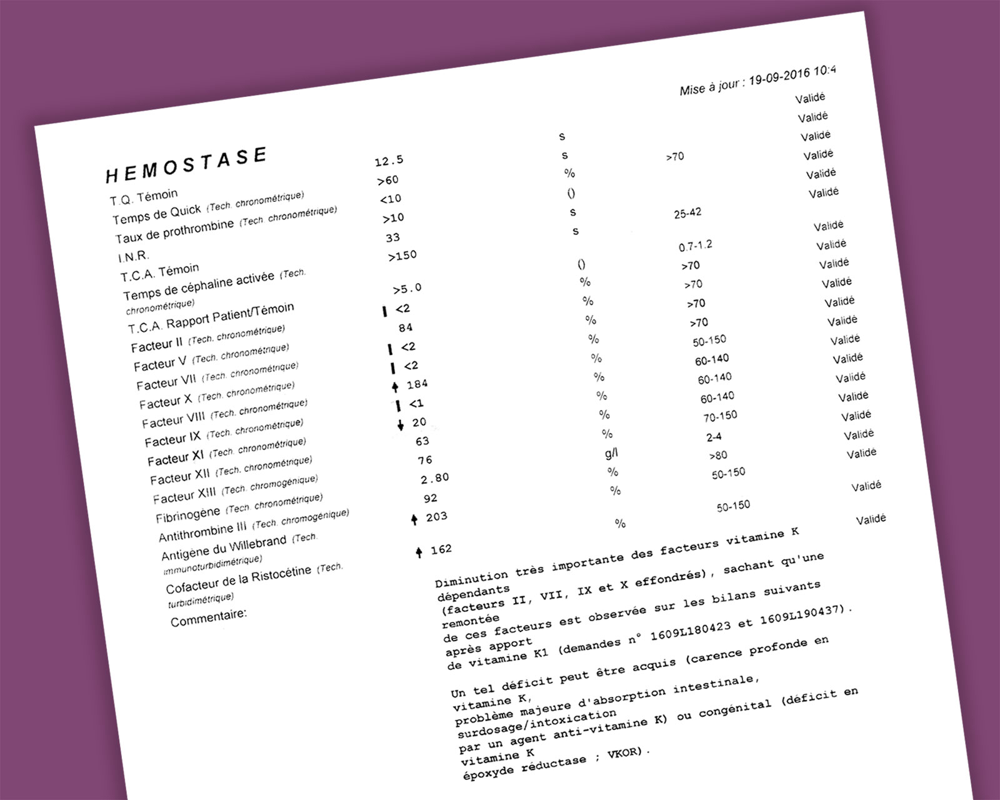
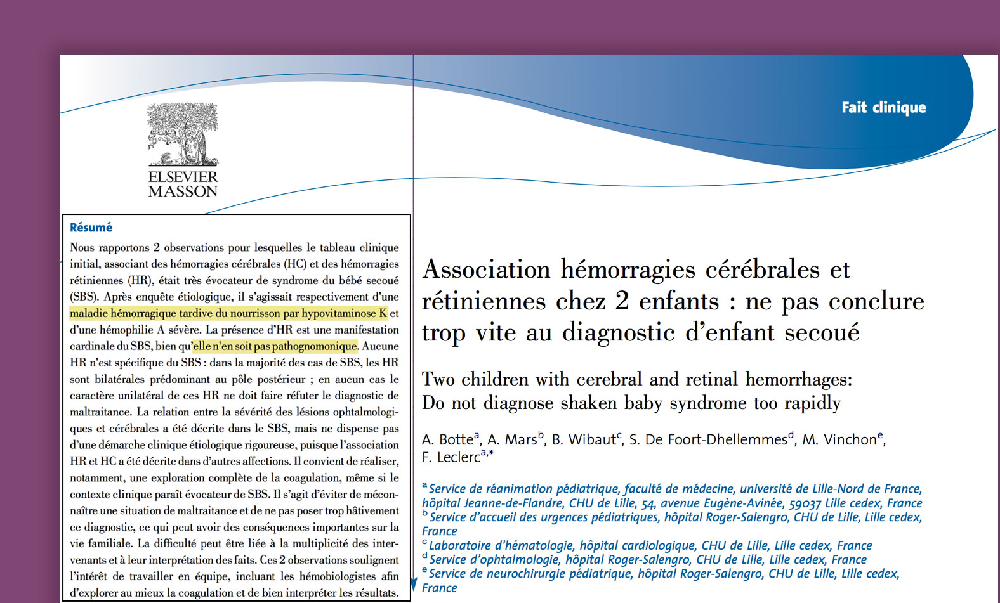

Ismaël
- Accueil
- Témoignages
- Ismaël
Luqman est atteint d'une maladie génétique rarissime qui cause un déficit sévère en vitamine K associé à des troubles de la coagulation. Le syndrome du bébé secoué a néanmoins été diagnostiqué. Luqman est placé depuis le mois de septembre 2016 et ses parents sont toujours mis en examen. Les parents ont ouvert un blog et lancé une pétition.
Mise à jour : Luqman a retrouvé ses parents et ces derniers ont été mis totalement hors de cause par la justice.
Le 2 septembre 2016, mon épouse en changeant notre fils a constaté une petite boule sur son torse.
Le 5 septembre 2016, nous avons emmené Luqman chez son médecin qui avait l'habitude de le suivre. Elle nous demanda d’aller faire une échographie pour avoir plus d’informations sur cette petite boule.
Le 7 septembre 2016, échographie au CHU de Hautepierre ; les médecins nous ont rassurés, nous disant que c’était un petit nodule bénin et que ce n’était rien de grave, mais qu’il fallait le surveiller. Il a également ajouté qu'il faudrait probablement l'opérer vers 6 mois s’il ne se résorbait pas de lui-même.
Le 16 septembre 2016, mon épouse avait remarqué que le nodule avait soudainement pris du volume et qu'il avait changé de couleur (rouge-violacé et autour vert bleuté). Inquiets, nous nous sommes rendus de nous-mêmes aux urgences. Dans la salle d’attente notre fils gémissait. Nous avons passé deux heures environ à l’hôpital et nous avons pensé que ces gémissements pouvaient être dus au nodule qui avait grossi et qui lui faisait mal.
Craignant une infection pour notre bébé, nous avons fait part de nos inquiétudes au médecin car le nodule avait pris du volume du jour au lendemain et avait changé de couleur. Le médecin après l'avoir ausculté a dit qu'il n'avait pas de fièvre et que ce bouton n'était pas infecté. Par contre on nous avait signalé qu'il y avait une épidémie de gastro-entérite et qu'il fallait faire attention à notre bébé.
Au retour de l'hôpital il était plus de 19h, notre fils ne cessait de pleurer, il était inconsolable. Il ne voulait même pas téter alors que nous étions depuis plus de deux heures à l’hôpital, et qu’habituellement il ne refusait pas de téter. C'est seulement entre 20h30 et 21h qu'il accepta de téter puis il s'endormit vers 22h.
Il s'était réveillé à 3h du matin pour téter à nouveau puis s’était rendormi. Vers 4h45 du matin notre fils s’était réveillé, il a tété et s’est aussitôt rendormi comme à son accoutumée, mais quelques minutes après il a vomi en jet une grande quantité de lait et ceci sans se réveiller.
Mon épouse m'a raconté les faits car à 5h du matin j'étais parti au travail. Nous étions le 17 septembre 2016, la veille nous étions à l’hôpital pour le nodule qui avait grossi.
Mon épouse me raconta alors :
« J’ai commencé à changer mon fils car il avait vomi et j’ai remarqué qu'il avait le corps chaud. J'ai pris sa température et le thermomètre indiquait 38,5 degrés donc je l’ai déshabillé et je lui ai mis des langes mouillés pour faire baisser la fièvre. Mon fils n'était plus endormi mais il ne réagissait pas beaucoup malgré toutes ces manipulations pour le changer et malgré les langes humides que je lui mettais. Il était 5h passé et mon mari était parti au travail.
Vers 6h30 du matin j'ai voulu l'allaiter pour qu'il ne se déshydrate pas car il avait énormément vomi et qu'il avait de la fièvre. Mais il semblait avoir beaucoup de difficultés à téter, il s’étouffait à plusieurs reprises, vomissait ce qu’il avait ingurgité et cela en grande quantité. Cette fois-ci il était réveillé et il avait l'air de souffrir.
J'ai appelé mon mari qui, étant au travail n’avait pas tout de suite entendu mes appels téléphoniques. Vers 9h30 j'ai donc contacté le SAMU, qui m'a transmis SOS médecins. On m'a dit d'appeler la protection civile, ils sont arrivés chez moi vers 12h.
Entre temps mon fils avait fait ses dernières selles et urines vers 11h car je l’avais changé à ce moment-là. »
Arrivés à notre domicile, les personnes de la protection civile avaient examiné notre fils et nous avaient dit qu’il n’avait rien d'inquiétant, mais qu'il fallait aller aux urgences. Comme nous y étions la veille pour le nodule et qu'ils nous avaient dit de faire attention à l’épidémie de gastro-entérite nous nous sommes dirigés vers SOS médecins aux alentours de 16-17h. Voyant que notre fils se déshydratait ils nous ont dit d’aller aux urgences.
Vers 18h, les médecins ont diagnostiqué une gastro-entérite et ont installé notre fils au 8ème étage, au service des nourrissons et ils nous ont dit que ce n’était rien de grave car la veille il était en consultation chez eux et qu’il a dû attraper la gastro-entérite.
Malgré la perfusion pour éviter la déshydratation notre fils avait l’air de souffrir.
Ce soir-là, à l'hôpital, mon épouse avait passé la nuit éveillée car elle avait remarqué que notre enfant avait mal et qu'il gémissait. Vers 23h elle en avait informé le personnel à plusieurs reprises, qui avait prévenu le médecin, mais ce dernier avait dit aux personnels de lui transmettre qu’elle « exagère et stresse pour rien », que notre fils ne pouvait pas avoir mal car «nous lui avons donné du Doliprane ».
Le personnel médical avait demandé à mon épouse de quitter la chambre où se trouvait notre bébé car selon eux «c’est elle qui le stresse ».
Mon épouse essayait de se rassurer comme elle pouvait et ne demandait plus rien car on risquait de lui demander de quitter la chambre.
Mais après avoir vu son bébé souffrir toute une nuit sans demander qu'un médecin ne prenne au sérieux ses douleurs, elle a demandé à 6h30 du matin qu'un médecin vienne voir notre bébé.
Le médecin finit par venir pour lui dire que ce n’était qu'une gastro-entérite qui passera au bout de deux jours ; qu’il était normal qu’en tant que maman, elle s’inquiète.
Seulement c'est à 7h30 du matin, soit 1h après la visite du médecin dans la chambre que notre enfant avait convulsé, ses yeux étaient levés vers le haut, son visage et ses lèvres sont devenus pâles et ses membres se sont crispés. Elle appuya sur la sonnette d'alarme mais personne ne venait. Elle posa notre bébé et alla en criant jusqu'à eux pour qu’ils viennent le voir.
Un scanner fut entrepris pensant que c’était un nerf bouché. Ensuite une IRM avait été faite pour avoir plus d’informations.
Après cet examen les médecins nous ont dit que notre fils avait « plusieurs hématomes sous-duraux de différents âges ».
Des prises de sang lui ont été faites et on nous a informés qu’il avait un INR > 10 (son sang ne coagule pas) et une énorme carence en vitamine K, suite à cela il lui a été administré de la vitamine K.
Mon épouse avait remarqué que depuis la prise de la vitamine K le nodule disparaissait petit à petit. Nous avons demandé aux médecins s'il n’y avait pas un lien entre le nodule qui s'était aggravé juste deux jours avant la convulsion de Luqman et cette carence en vitamine K. Ils nous ont répondu que cela n'avait rien à voir et que cela pouvait partir tout seul. A savoir, le nodule qui avait grossi deux jours avant la convulsion s'était résorbé et il ne reste à ce jour qu'une petite trace bleue.
Lors de l'échographie du 7 septembre on nous avait dit tout à fait le contraire, que ce nodule ne pouvait pas se résorber seul et qu'il fallait attendre qu'il ait au moins 6 mois pour l'opérer. Ces paroles contradictoires nous inquiétaient car notre fils était sans aucun doute malade. Découvrir sa carence en vitamine K ne suffisait pas puisque nous devions comprendre pourquoi il avait cette carence. D'ailleurs l'un des médecins nous a dit qu'il fallait rechercher les causes d'un tel déficit.

Après ces différents examens, on nous a accusés d'avoir secoué notre bébé. Or aucune violence à l'égard de notre fils n'a jamais été faite. Cela est impossible ! De plus il n’est jamais tombé, il n’a reçu aucun choc et il a encore moins été secoué. Nous n’avions jamais confié notre enfant à qui que ce soit. Lorsque nous avions de la visite, il était toujours proche de nous et quand il dormait nous le mettions dans son lit en fermant la porte.
Un médecin nous a dit que notre fils avait une grosse carence en vitamine K et que cela pouvait expliquer ses hématomes sous-duraux. Nous lui avons dit que les médecins avaient des soupçons quant à des secouements, mais elle nous a montré le bilan sanguin de notre fils et nous a dit que le déficit en vitamine K provoquait ces hémorragies, et que donc le cas de notre fils ne relevait pas de la maltraitance.
Nous l'avons recroisée quelques jours plus tard, dans le couloir de l'hôpital mais elle nous a parlé très brièvement comme si elle était mal à l'aise de nous revoir.
On nous a pris un RDV chez l’assistante sociale du CHU afin de nous parler de l’origine de ces hématomes. Etant soucieux de l’état de santé de notre enfant, nous cherchions à comprendre ce qu'il avait et probablement ce qu'il a encore. Le médecin nous avait dit que c'était la procédure à suivre.
Après 10 jours à l'hôpital en compagnie de notre fils, un signalement a été fait. On nous a informés que notre enfant était en danger et que l'hôpital avait reçu un fax du procureur de la République disant que notre enfant serait placé durant l'enquête, à l'hôpital et au service de protection de l’enfance et que nous devions quitter les lieux.
Nous étions restés du 17 au 27 septembre 2016 à l'hôpital avec notre enfant et le personnel avait vu comment nous étions avec notre fils. Nous ne sommes ni violents ni agressifs. Qu’avons-nous fait pour qu’il y ait soupçon de maltraitance ?
Notre venue à l'hôpital était dans le but de trouver la cause des vomissements de notre fils. Le diagnostic s'est arrêté sur le syndrome du bébé secoué alors que notre bébé est malade et n'a jamais été maltraité. J'insiste sur le fait que nous avons emmené notre enfant de nous-même car nous nous inquiétons quant à son état de santé. Finalement, nous nous retrouvons soupçonnés de maltraitance comme si la maladie de notre bébé ainsi que son état de santé actuel ne sont pas déjà très éprouvants pour nous.
Toute personne qui vivrait une telle épreuve, souhaiterait que le maximum d'examens soient établis pour ne pas conclure hâtivement au diagnostic du « syndrome du bébé secoué ».
Il existe malheureusement des cas de maltraitance mais il ne faut pas mettre tout le monde « dans le même sac ».
Il y a des études scientifiques qui ont démontré que les hématomes sous-duraux ainsi que l'hémorragie rétinienne peuvent être la conséquence de différentes maladies, notamment en lien avec un déficit en vitamine K.

Nous avons eu le droit de voir notre fils seulement 30 minutes le jeudi et 30 minutes le vendredi.
Le 3 et 4 novembre, nous sommes allés à la pouponnière pour la visite de notre fils. Nous avions tout de suite remarqué qu'il avait perdu du poids, de plus il ne faisait que pleurer.
Nous avons demandé au personnel qui a contacté la puéricultrice. Cette dernière est venue nous expliquer qu'effectivement notre fils avait perdu du poids ces jours-ci et que c'était probablement lié au médicament anti-épileptique qu'il prenait.
Vous pouvez imaginer comment nous nous sommes sentis désemparés face à l'état de notre petit.
Le samedi, mon épouse les rappelle pour savoir s'il allait mieux. On lui a dit qu'il dormait, elle a donc demandé s’il dormait plus que la norme et la dame répondit que « oui ».
Elle demanda s’il avait perdu du poids, elle lui dit qu'il en avait perdu mais elle n’a pas précisé combien.
Par la suite nous apprenons qu’il avait perdu 280g en 2-3 jours, un bébé de son âge n’est-il pas censé prendre du poids et non en perdre ?
Nous nous posons beaucoup de questions quant à cela. Mon épouse et moi-même sommes dans une grande inquiétude quant au devenir de notre bébé car à l’hôpital ils pensaient que c’était une gastro-entérite, jusqu’à ce que notre enfant convulse ce qui a laissé de graves séquelles.
Nous n’avons le droit d’appeler qu’une fois par jour la pouponnière pour avoir des nouvelles de notre bébé. Notre questionnement quant à l’état de notre fils à la pouponnière est dû à cette séparation brutale qui nous perturbe tous, tant notre fils malade que nous parents angoissés.
Le 17 septembre 2016, jour de l'hospitalisation de notre fils Luqman, il pesait 4,200 kg.
Deux mois plus tard, il ne pèse pas beaucoup plus. Nous sommes vraiment inquiets quant à son poids qui stagne alors que pour son âge soit 5 mois il devrait peser au minimum 6 kg sachant que la moyenne serait de 7 kg.
Aux alentours de Noël, nous apprenons finalement que Luqman est atteint d'abétalipoprotéinémie, une maladie génétique très rare qui touche moins d'un bébé sur un million. Cette maladie peut provoquer un déficit en vitamine K et pourrait donc expliquer les symptômes selon certains médecins. Pourtant, le médecin expert qui est spécialiste de maltraitance mais pas de maladies rares dit que cette maladie ne peut pas causer les symptômes. Nous sommes donc toujours accusés après plus d'un an. Luqman devrait aller dans un centre spécialisé dans cette maladie à Lille mais cela n'a pas encore été possible à cause des procédures judiciaires.
Nous avons été stigmatisés comme « mauvais parents » au vu d'un diagnostic de « syndrome du bébé secoué » qui est une théorie valable de maltraitance, mais dans notre cas nous savons qu'il ne s'agit pas de cela. Sa place n’est pas dans une pouponnière mais avec nous, à un endroit où il pourra bénéficier de soins. Nous avons également peur que sa carence en vitamine K provoque à nouveau ce qu'il a vécu le 18 septembre 2016 et nous espérons que cela ne soit pas pris à la légère au détriment de l’hypothèse du syndrome du bébé secoué.
Il s'agit là de la vie d'un être sans défense qu'il faut essayer de sauver car même les médecins au départ ne pensaient pas du tout que l'état de santé de notre petit était en danger.
Nous avons attendu notre bébé avec impatience, nous avions préparé sa venue de la meilleure des manières, nous le bercions d'amour et de tendresse nous ne pouvions même pas imaginer lui faire le moindre mal. Quand un bébé s'est habitué à l'affection de ses parents, il sera difficile pour lui de grandir dans un contexte complètement différent.
On pourrait penser qu'il s'est adapté à la pouponnière mais en tant que parent qui connaît son enfant je dirais plutôt que lors de ces 15 jours seul à l'hôpital, il s'est malheureusement habitué à ne plus avoir quelqu'un qui répond à ses appels. Nous pensons sans cesse à notre enfant tout seul dans son lit à la pouponnière qui, malgré un personnel présent, est sans aucun doute en manque d'affection de sa maman, son papa et son environnement dans lequel il grandissait et évoluait jusque-là.
Nous n'oublierons jamais le jour, où lorsque nous lui apportions le lait maternel à l'hôpital nous avions demandé de lui faire juste un bisou, nous l'avions trouvé le front trempé de sueur et ceci était la preuve qu'il pleurait jusqu'à être dans cet état.
C'est avec une grande tristesse que nous vous avons relaté notre histoire mais également avec un grand espoir que nous espérons que nous serons à nouveau réunis avec notre fils.
Nous n'avons jamais pu obtenir le dossier médical de notre bébé, j'espère vraiment que les choses seront prises en main car l'erreur est certes humaine mais si on peut l'éviter, ce sont de grandes souffrances à notre fils et à nous, ses parents que vous épargnerez.
Voilà la triste histoire de notre enfant, notre histoire qui nous laisse meurtris par les douleurs de la séparation, en plus de l’impuissance face à la maladie qui s’est déclenchée soudainement. Des accusations à tort qui risquent de briser une famille. Notre enfant à peine venu au monde et déjà privé de l’amour de ses parents, de la chaleur de sa maman.
Une citation du livre Élever son enfant autrement de la Pédiatre Catherine Gueguen :
« Durant les premières années de la vie, le cerveau est très vulnérable, très malléable. Les relations que l’enfant entretient avec ses parents, son entourage ont des effets profonds sur son cerveau : sur les structures et les circuits cérébraux, sur les cellules cérébrales et leurs connexions, sur les molécules cérébrales et même sur l’expression de certains gènes. Ces relations retentiront ainsi de façon déterminante sur le comportement social et cognitif de l’enfant, notamment sa capacité à surmonter le stress, à vivre ses émotions, à exprimer son affectivité et aussi sur sa mémoire et son apprentissage. »
Vous vous douterez bien que la présence de sa maman et son papa, pourraient influer sur une évolution positive de sa santé. Les neurosciences affectives dont parle la Pédiatre Catherine Gueguen traitent beaucoup de l’importance que doit entretenir un bébé avec ses parents.